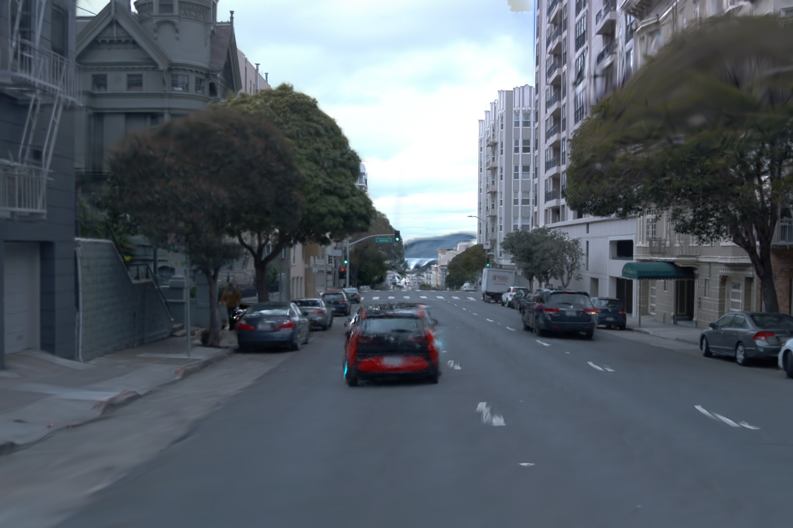
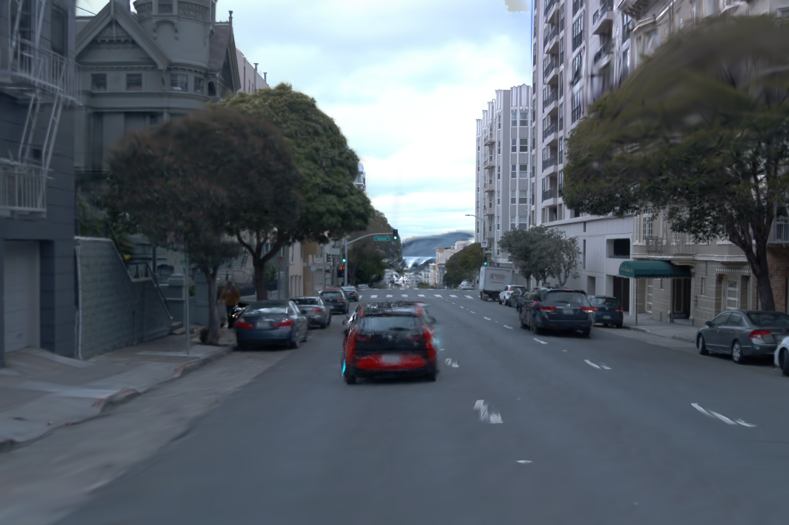

StreetCrafter: Street View Synthesis
with Controllable Video Diffusion Models
Abstract
This paper aims to tackle the problem of photorealistic view synthesis from vehicle sensors data.
Recent advancements in neural scene representation have achieved notable success in rendering high-quality autonomous driving scenes, but the performance significantly degrades as the viewpoint deviates from the training trajectory.
To mitigate this problem, we introduce StreetCrafter, a novel controllable video diffusion model that utilizes LiDAR point cloud renderings as pixel-level conditions, which fully exploits the generative prior for novel view synthesis, while preserving precise camera control. Moreover, the utilization of pixel-level LiDAR condition allows us to make accurate pixel-level edits to target scenes.
In addition, the generative prior of StreetCrafter can be effectively incorporated into dynamic scene representations to achieve real-time rendering.
Experiments on Waymo Open and PandaSet datasets demonstrate that our model enables flexible control over viewpoint changes, enlarging the view synthesis regions for satisfying rendering, which outperforms existing methods.
Pipeline

(a) We process the LiDAR using calibrated images and object tracklets to obtain a colorized point cloud, which can be rendered to image space as pixel-level conditions. (b) Given observed images and reference image embedding, we optimize the video diffusion model conditioned on the LiDAR renderings to perform controllable video generation. (c) Starting from the rendered images and LiDAR conditions under novel trajectory, we use the pretrained controllable video diffusion model to guide the optimization of the dynamic 3DGS representation by generating novel views as extra supervision signals.
Visual Comparisons
 

Scene Editings
More Results of Novel Trajectory
Results on the Waymo Dataset
Results on the PandaSet Dataset
BibTeX
@inproceedings{yan2024streetcrafter,
title={StreetCrafter: Street View Synthesis with Controllable Video Diffusion Models},
author={Yan, Yunzhi and Xu, Zhen and Lin, Haotong and Jin, Haian and Guo, Haoyu and Wang, Yida and Zhan, Kun and Lang, Xianpeng and Bao, Hujun and Zhou, Xiaowei and Peng, Sida},
booktitle={Proceedings of the IEEE/CVF Conference on Computer Vision and Pattern Recognition (CVPR)},
year={2025},
}